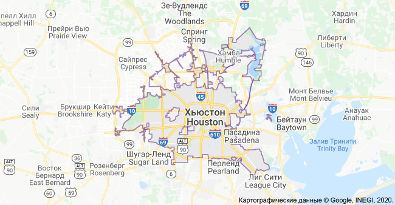
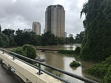

Материал из википедии-свободной энциклопедии
| Город | |
| Хьюстон | |
| англ. Houston | |
|
|
|
|
|
|
| Страна | США |
| Штат | Техас |
| Округ | Харрис |
| Мэр | Сильвестр Тёрнер | История и география |
|---|---|
| Основан | 30 августа 1836 года |
| Город с | 5 июня 1837 года |
| Площадь | 1 653,87км² |
| Высота центра | 32м |
| Тип климата | субтропический муссонный |
| Часовой пояс | UTC-6:00, летом UTC-5:00 | Население |
| Население | 2 343 365(2018) |
| Плотность | 1413.28 чел.км² |
| Агломерация | 6 997 384 человек(2018) |
| Катокойконим | Houstonian | Цифровые идентификаторы |
| Телефонный код | 281,346,713,832 |
| Почтовые индексы | 770XX,772XX |
| GNIS | 1380948 |
|  | |
Хью́стон (англ. Houston, МФА: [ˈhjuːstən]) — четвёртый по количеству жителей город в Соединённых Штатах Америки и крупнейший город в штате Техас с населением 2 343 365 человека на 1.07.2019 года. Хьюстон является административным центром округа Харрис, а также главным экономическим центром агломерации Большого Хьюстона с общим населением 6 997 384 человек на 1.07.2018 года (5 место по США). Город располагается в 50 километрах от Мексиканского залива на прибрежной равнине.
Хьюстон был основан 30 августа 1836 года и включён в состав республики Техас 5 июня 1837 года, получив своё имя в честь Сэмюэла Хьюстона — главнокомандующего армией Техаса во время Техасской революции и президента Республики Техас. Быстрое развитие порта и железных дорог в XIX веке, а также начало добычи нефти и последовавшее развитие нефтяной промышленности в XX веке привели к быстрому росту населения. В 1960-е годы количество жителей превысило один миллион человек, а в 2000-е — два миллиона.
Город является ведущим мировым центром энергетической промышленности, а экономика города также представлена предприятиями в области аэронавтики, транспорта и здравоохранения. Важнейшими объектами для экономики и инфраструктуры города являются космический центр имени Линдона Джонсона, крупнейший американский по международным грузоперевозкам порт, хьюстонский судоходный канал, крупнейший в мире Техасский медицинский центр.
| Содержание: |
|---|
|
|
Город назван в честь Сэмюэла Хьюстона — главнокомандующего армией Техаса во время Техасской революции (1835—1836) и президента Республики Техас (1836—1838, 1841—1844).
Официальное прозвище Хьюстона — «Space city», которое можно перевести, как «космический город», «город космонавтики» или «космоград». Название дано из-за того, что здесь находится космический центр имени Линдона Джонсона. Всего город имеет 12 прозвищ.
В американской разговорной речи есть популярная фраза: «Хьюстон, у нас проблема» (англ. Houston, we’ve had a problem), появившаяся после неудачной миссии Аполлон-13. В Хьюстоне проходили съёмки фильма «Аполлон-13», в основу сюжета которого легли реальные события миссии.

|
После окончания войны за независимость Техаса, в августе 1836 года предприниматели братья Август и Джон Аллены купили 26,9 км² земли вдоль реки Буффало-Байю, планируя основать на ней населённый пункт. Они хотели, чтобы будущий город стал столицей Техаса и крупным торговым центром.
Датой основания города принято считать 30 августа 1836 года, когда братья Аллены разместили объявление о появлении города. Город назвали в честь генерала Сэма Хьюстона, возглавлявшего армию техасцев в битве при Сан-Хасинто во время войны против Мексики, позже избранного президентом Техаса. На январь 1837 года в посёлке проживало всего 12 человек, однако через четыре месяца население возросло до 1 500 человек. 5 июня 1837 года город был включён в округ Гаррисберг (ныне Харрис) и стал временной столицей Республики Техас, которой оставался до 1839 года. Первым мэром Хьюстона стал Джеймс Холман.
|
|
В 1840 году жители Хьюстона создали торговую палату, деятельность которой была направлена на развитие бизнеса по морским перевозкам и недавно построенного порта на Буффало-Байю, в течение первых четырёх лет палата стремительно развивалась. Значимость торговой палаты в экономике росла, в 1853 году Законодательное собрание Техаса выделило денежные средства на улучшение каналов Буффало-Байю. В 1846 году город вошёл в состав США вместе с Республикой Техас.
К 1860 году были проложены железные дороги, связавшие Хьюстон, Галвестон и Бомонт. В этом же году Хьюстон стал железнодорожным узлом для экспорта хлопка. Во время гражданской войны город служил штабом генерала Джона Магрудера, использовавшего его в качестве организационного пункта для сражения у Галвестона. В 1860-х годах продолжал развиваться важный для экономики города объект — канал на Буффало-Байю. С середины XIX века началась активная торговля между Хьюстоном и близлежащими городами; к 1890 году город стал железнодорожным центром Техаса.
К концу века в городе уже были электрическое освещение, улицы из блоков и булыжников. Городской общественный транспорт представляла конка.
.jpg)
|
В 1900 году на Хьюстон обрушился Галвестонский ураган, продолжавшийся с 27 августа по 12 сентября. В пересчете на сегодняшний курс ущерб составил бы $526 млн, погибло 8 тысяч человек. В следующем году было найдено большое месторождение нефти вблизи города Бомонт, что послужило началом развития нефтяной промышленности в Техасе. В 1902 году президент США Теодор Рузвельт утвердил проект стоимостью в $1 млн на реконструкцию хьюстонского судоходного канала. К 1910 году численность населения города достигла 78 800 человек, почти в два раза превысив количество жителей проживавших в Хьюстоне в 1900 году. В 1914 году президент США Вудро Вильсон принял участие в открытии нового глубоководного порта Хьюстона, а через год был открыт хьюстонский судоходный канал.
К 1930 году Хьюстон стал самым большим городом Техаса, обогнав по численности населения такие города как Даллас, Форт-Уэрт и Остин.
Вторая мировая война стала мощным стимулом для экономического развития города. Из-за резко возросших потребностей США в нефтепродуктах и синтетическом каучуке вдоль судоходного городского канала было возведено несколько нефтехимических заводов и производственных предприятий. В те годы Хьюстон стал крупным центром по производству нефтехимических изделий, однако в тот же период уровень тоннажа судов, находящихся в порту, снизился. Аэропорт Эллингтон-Филд, построенный ещё во время Первой мировой войны и реконструированный в 1940—1941 годах, служил учебным центром по подготовке лётного состава ВВС.
|
|
В 1945 году было начато формирование Техасского медицинского центра. В конце 1940-х несколько пригородов были включены в городскую черту, в результате чего площадь Хьюстона увеличилась более чем в два раза. В 1950-е годы управления многих крупных (в основном нефтяных) компаний США переместились в Хьюстон, что благоприятно отразилось на экономике города, одним из поводов для переезда послужило массовое оснащение всех офисов кондиционерами.
| Именно кондиционирование воздуха! Именно оно было основой для стремительного роста Хьюстона в 1950 году, когда он стал наиболее оснащённым кондиционерами городом в мире. Именно это стимулировало многие корпорации переместить свои штаб-квартиры в Хьюстон. |
| Оригинальный текст (англ.) |
[показать/скрыть]
It was the air-conditioning! That was the foundation for the big
boom growth of Houston in 1950 when it became the most
air-conditioned city in the world. It was the stimulus for many
corporations to move their headquarters to Houston.
|
|
|
В 1962—1964 годах в двадцати пяти милях к югу от центра Хьюстона, на землях, переданных федеральному правительству университетом Райса, был построен Центр управления космическими кораблями, с 1973 года носящий имя Линдона Джонсона. В 1960-х годах население Хьюстона достигло миллиона человек. землях, переданных федеральному правительству университетом Райса, был построен Центр управления космическими кораблями, с 1973 года носящий имя Линдона Джонсона. В 1960-х годах население Хьюстона достигло миллиона человек.
Рост населения в середине 1980-х годов резко прекратился, когда начала стремительно падать цена на нефть из-за кризиса перепроизводства нефти и ухудшаться ситуация в городской экономике. В 1986 году взорвался космический шаттл «Челленджер», это трагическое происшествие также отрицательно сказалось на аэрокосмической отрасли. Население города за это десятилетие выросло всего на 2,3 %. C конца в 1980-х годов в результате рецессии Хьюстон прилагает усилия по диверсификации своей экономики, сосредоточив внимание на развитии аэрокосмической промышленности, здравоохранения, биотехнологий и сокращении зависимости от нефтяной индустрии.
В 2000-х годах численность населения достигла двух миллионов человек, и её рост за этот период составил 7,5 % и продолжает стабильно расти, достигнув показателя в 10,4 % за 2010—2017 годы. рост за этот период составил 7,5 % и продолжает стабильно расти, достигнув показателя в 10,4 % за 2010
В августе 2005 года 240 тысяч жителей Нового Орлеана, на который обрушился ураган «Катрина», эвакуировались в Хьюстон. Впоследствии, до 40 тыс. человек осталось жить в городе. Тем не менее, за последние десятилетия сам Хьюстон периодически переживает ураганы, в частности ураганы «Эллисон» и «Айк», произошедшие в 2001 и 2008 годах соответственно, принёсшие ущерб в $16,67 млрд хьюстонскому региону. Спустя месяц, в сентябре 2005 года из-за угрозы обрушения урагана «Рита» из города началась массовая эвакуация жителей, которая привела к самым большим пробкам на дорогах за всю историю города, тем не менее, город особо от урагана не пострадал, избежав основного удара стихии.
В мае 2015 и апреле 2016 года город подвергался наводнению из-за рекордно сильных дождей за всю историю города.
|
|

|
Хьюстон расположен в 50 километрах от Мексиканского залива на прибрежной равнине. Значительная часть города была построена на лесных угодьях, болотах и прериях, они до сих пор сохранились в близлежащих районах около Хьюстона. Город расположен на территории, для которой обычны частые ливни и дожди, поэтому для Хьюстона наводнения — постоянная проблема. Высота города над уровнем моря в среднем 15 метров[45], самая высшая точка — северо-запад Хьюстона (38 метров). Площадь города составляет 1739,3 км², из которых 1658,1 км² занято сушей, а 81,2 км² — водная поверхность. болотах и прериях, они до сих пор сохранились в близлежащих районах около Хьюстона. Город расположен на территории, для которой обычны частые ливни и дожди, поэтому для Хьюстона наводнения — постоянная проблема. Высота города над уровнем моря в среднем 15 метров, самая высшая точка — северо-запад Хьюстона (38 метров). Площадь города составляет 1739,3 км², из которых 1658,1 км² занято сушей, а 81,2 км² — водная поверхность.
Город находится в зоне субтропического муссонного климата по классификации Кёппена (Cfa). Преобладающие юго-восточные ветры с Мексиканского залива дуют на протяжении всего года[47]. Большая влажность в городе обусловлена близким присутствием Мексиканского залива. Влажность воздуха достигает утром 90 % и к полудню снижается до 70 %. В среднем 90 дней в году — солнечные, большая часть которых в октябре и ноябре. 160 дней в году — облачные, большая часть — с декабря по май.
Весной и летом в городе жарко и влажно: средняя температура весной 21 °C, а летом — 28,8 °C. Из-за высокой температуры почти во всех транспортных средствах и зданиях установлены кондиционеры. Абсолютный максимум температуры был зарегистрирован в 2000 и 2011 годах, когда она составила 42,8 °C. На Хьюстон часто обрушиваются ураганы, самые крупные из которых за последние десятилетия — «Эллисон» и «Айк». Осень — достаточно тёплое время года, особенно сентябрь. Температура в этом месяце выше, чем в мае. Средняя температура осенью составляет 21,8 °C, а среднее количество осадков — самое высокое в году (359,7 мм). Зима тёплая. Самая низкая температура была зарегистрирована в 1930 году — −15 °C. Средняя температура зимой составляет 12,6 °C, а максимальная была зарегистрирована в 1986 году — 32,8 °C. 18 дней в году температура опускается ниже 0 °C. Обычно зимой осадки выпадают в виде дождя, но редко могут быть и в виде снега. Начиная с 1895 года, снег падал 35 раз, причём 21 раз устанавливался временный снежный покров.
| Дни с ясной и дождливой погодой в месяц(суммарно по часам) | ||||||||||||||||
|---|---|---|---|---|---|---|---|---|---|---|---|---|---|---|---|---|
| Месяц | Янв | Фев | Мар | Апр | Май | Июн | Июл | Авг | Сен | Окт | Ноя | Дек | Год | |||
| Солнечное сияние, день | 10 | 10 | 9 | 8 | 8 | 8 | 10 | 9 | 7 | 7 | 8 | 9 | 103 | |||
| Дождь, день | 14 | 12 | 12 | 10 | 10 | 14 | 13 | 12 | 10 | 9 | 10 | 12 | 138 | |||
| Климат Хьюстона | ||||||||||||||||
|---|---|---|---|---|---|---|---|---|---|---|---|---|---|---|---|---|
| Показатель | Янв | Фев | Мар | Апр | Май | Июн | Июл | Авг | Сен | Окт | Ноя | Дек | Год | |||
| Абсолютный максимум, °C | 30,6 | 32,8 | 35,6 | 35,0 | 37,2 | 41,7 | 40,6 | 42,8 | 42,8 | 37,2 | 31,2 | 29,4 | 42,8 | |||
| Средний максимум, °C | 17,2 | 19,1 | 22,8 | 26,5 | 30,2 | 33,0 | 34,3 | 34,8 | 32,1 | 27,8 | 22,5 | 18,0 | 26,5 | |||
| Средняя температура, °C | 11,7 | 13,6 | 17,1 | 20,9 | 25,0 | 28,0 | 29,1 | 29,2 | 26,6 | 22,0 | 16,9 | 12,5 | 21,05 | |||
| Средний минимум, °C | 6,2 | 8,1 | 11,4 | 15,2 | 19,8 | 23,0 | 24,0 | 23,8 | 21,0 | 16,1 | 11,2 | 7,0 | 15,6 | |||
| Абсолютный минимум, °C | -15 | -14,4 | -6,1 | -0,6 | 5,6 | 11,1 | 16,7 | 12,2 | 7,2 | -1,7 | -7,2 | -13,9 | -15 | |||
| Норма осадков, мм | 85,9 | 81,3 | 86,6 | 84,1 | 129,3 | 150,6 | 96,3 | 95,5 | 104,7 | 144,8 | 110,2 | 95 | 1264,3 | |||
| Температура воды на побережье у Галвестона | ||||||||||||||||
|---|---|---|---|---|---|---|---|---|---|---|---|---|---|---|---|---|
| Показатель | Янв | Фев | Мар | Апр | Май | Июн | Июл | Авг | Сен | Окт | Ноя | Дек | Год | |||
| Средняя температура, °C | 12,2 | 12,8 | 16,1 | 21,7 | 25,6 | 28,3 | 30,0 | 30,0 | 28,3 | 23,9 | 19,4 | 15,0 | 21,9 | |||
Для почв Хьюстона характерно наличие осадочных горных пород и песка. На поверхности часты эрозии, на территории города находится около 300 разломов, их общая длина примерно 500 км. Один из них — Long Point–Eureka Heights fault system. Также есть уникальные отложения из смеси песков и глин, благодаря им, через определённое время, из разлагающихся органических веществ образуются нефть и природный газ. На окраинах Хьюстона встречается чёрная плодородная почва, на которой растят рис, сою, зерновые культуры, овощи и разводят крупный рогатый скот, лошадей, свиней и домашнюю птицу. В городе и его окрестностях имеется очень малая вероятность сильного землетрясения, а самое сильное землетрясение магнитудой 3,8 было в 1910 году.
В Хьюстоне протекают четыре реки. Основная, Буффало-Байю, проходит через центр города и хьюстонский судоходный канал, и имеет три притока. Брес-Байю протекает вдоль района Техасского медицинского центра, Симс-Байю проходит через южную часть города, Уайт-Ок-Байю — через северную часть города. Судоходный канал следует дальше до Галвестона, вплоть до Мексиканского залива. В пригороде находятся два озера: Конро и Хьюстон, которые являются водохранилищем и служат городскими источниками воды. На территории города протекает множество подземных вод, которые раньше активно использовали для водоснабжения, но перестали из-за медленного движения земной поверхности.

|
В флоре и фауне округа Харрис преобладают виды животных и растений, обитающих в болотных местностях, так как значительная часть города построена на болотах и прериях.
Среди земноводных и пресмыкающихся наиболее известны хьюстонская жаба и техасская рогатая ящерица. Среди млекопитающих можно отметить рыжего волка, оцелота и канадскую выдру. Среди птиц замечаются американский клювач и белоголовый орлан. Численность большинства животных за последний век значительно сократилась в черте округа и находится под угрозой исчезновения из-за их истребления и ухудшения экологической обстановки. В городе также водятся комары, представляющие опасность человеку.
В городе и его пригородах растут сосны, пальмы и другие деревья, растущие в субтропическом климате. Среди растений, произрастающих в городе, можно выделить орхидеи и магнолии.
|
|
Главными источниками загрязнения воздуха в Хьюстоне являются выхлопные газы от автомобилей, а также выбросы от более чем 400 химических предприятий, в числе которых два крупных нефтеперерабатывающих завода и нефтехимический комплекс вдоль судоходного канала и порта. Ситуация осложняется метеорологическими условиями: с апреля по октябрь в городе большое количество солнечных безветренных дней с высокими температурой и влажностью, из-за чего выбросы оседают над городом. Как следствие сложившейся экологической ситуации, из всех болезней наиболее распространены респираторные и онкологические. По данным американской лёгочной ассоциации, в 2016 году Хьюстон занял 16-е место в списке самых загрязнённых городов США по концентрации вредных веществ и 15-е место по озоновому загрязнению. В начале 2000-х ситуация с качеством воздуха была ещё хуже: Хьюстон уступал по уровню загрязнения только Лос-Анджелесу.
Не лучше ситуация с водой — Хьюстон занимает 95-е место из 100 крупнейших городов США по качеству воды.
|
|
Главой Хьюстона является мэр. Мэр является главным должностным лицом, он отвечает за общее руководство городом, подписывает все постановления и законы, принятые Муниципальным Советом и следит за тем, чтобы они выполнялись. Помимо этого, мэр представляет Совету годовой бюджет города для одобрения, а затем предоставляет Совету информацию о его исполнении. Глава города избирается гражданами города путём голосованию максимум на два срока, по 4 года каждый. Со 2 января 2016 года пост мэра занимает Сильвестр Тёрнер — член Демократической партии. Городской (Муниципальный) Совет Хьюстона состоит из одиннадцати человек, выбранных от одиннадцати избирательных округов, и пяти человек, выбранных от всего города в целом. Члены Совета избираются на такой же срок, как и мэр. В полномочия Совета входят назначение избранного мэра, изменение и подтверждение бюджета города, управление городской недвижимостью, ассигнование и выпуск облигаций, заключение контрактов и одобрение городских расходов на сумму более $50 тысяч. Городской контролёр, в обязанности которого входит распределять средства и финансировать городской бюджет, избирается независимо от мэра и совета. Со 2 января 2016 года эту должность занимает Крис Браун.
Хьюстон — самый крупный город США без административного деления. Город является административным центром округа Харрис, а также главным экономическим центром Большого Хьюстона.
|
|
В мэрии Хьюстона есть отдел по международной торговле и развитию, занимающийся взаимодействием администрации города с международным бизнес-сообществом. В 2018 году Хьюстон посетило 165 иностранных делегаций из 40 стран. В Хьюстоне расположены консульства 82 стран. По количеству консульств город занимает в США третье место после Нью-Йорка и Лос-Анджелеса. На данный момент у Хьюстона 18 городов-побратимов.
с 9 по 11 июля 1990 года в городе состоялся 16-й саммит G7. Ежегодно в Хьюстоне проводятся международные конференции, такие как Offshore Technology Conference и CERAWeek, где обсуждаются вопросы энергетики.
Более 430 хьюстонских компаний имеют офисы за рубежом, а также в городе располагаются офисы 800 зарубежных компаний.
Флаг города был принят в 1915 году. На нём изображена пятиконечная звезда на синем фоне. Внутри звезды — паровоз типа 2-2-0 (по американской классификации) — 4-4-0 «American». Это связано с тем, что в конце XIX — начале XX вв. паровозы данного типа были широко распространены на американском континенте, в частности именно они водили поезда в город. Новый флаг представлял собой немного изменённый предыдущий вариант флага города, принятый ещё в 1840 году. Причиной была смена локомотивов: паровоз типа 2-1-0, распространённый в 1830—1850 гг., был заменён на паровоз типа 2-2-0, изображённый на флаге по настоящее время.
Печать Хьюстона была утверждена городским советом Хьюстона 24 февраля 1840 года. Печать была разработана бывшим мэром Хьюстона Фрэнсисом Муром-младшим. Одинокая звезда — один из символов Техаса и её присутствие на печати обозначает принадлежность города к Республике Техас. Локомотив отождествляет прогресс, олицетворением которого железнодорожное движение и было во время принятия печати. Хьюстон служил железнодорожным центром на протяжении многих лет. Плуг символизирует сельское хозяйство Техаса.
| Крупнейшие компании, базирующиеся в Хьюстоне по версии Fortune 500 на 2018 год. | ||
| Техас | Компания | США |
| 4 | Phillips 66 | 23 |
| 7 | Sysco | 54 |
| 10 | ConocoPhillips | 86 |
| 11 | Enterprise Products Partners | 89 |
| 12 | Plains All American Pipeline | 94 |
| 14 | Halliburton | 127 |
| 17 | Occidental Petroleum | 167 |
| 21 | EOG Resources | 181 |
| 25 | Waste Management | 213 |
| 26 | Kinder Morgan | 224 |
| 29 | Group 1 Automotive | 272 |
| 31 | Quanta Services | 283 |
| 32 | CenterPoint Energy | 299 |
| 33 | Targa Resources | 302 |
| 34 | Calpine | 330 |
| 38 | Westlake Chemical | 352 |
| 39 | National Oilwell Varco | 357 |
| 41 | Cheniere Energy | 383 |
| 46 | Apache | 411 |
| 48 | Marathon Oil Corporation | 456 |
Хьюстон является одним из ведущих городов мира в сферах добычи и переработки нефти и природного газа, из-за чего часто именуется «энергетической столицей мира», а также биомедицинских исследований и аэронавтики. Также Хьюстон имеет репутацию «зелёного города», так как половина электроэнергии производится с помощью солнечных и ветряных установок. Большую роль в транспортной сфере города играет порт. В Хьюстоне базируется 19 компаний из списка Fortune 500.
Валовой внутренний продукт агломерации Большого Хьюстона в 2017 году составил $490,1 млрд и является седьмым по величине среди показателей других агломераций. Добывающая промышленность занимает 25,2 % в структуре ВВП, промышленное производство — 16,9 %, операции со страхованием, недвижимостью и финансами — 13 %. Большой Хьюстон занимает второе место среди агломераций США по экспорту товаров, составившему в 2016 году $84,1 млрд, из которых $68,2 млрд приходится на округ Харрис. Основные статьи экспорта, составляющие в сумме 67,1 % от всей суммы — нефть и газ, нефтепродукты, химические продукты, а 16,4 % — машинная и компьютерная продукция. Главные партнёры по экспорту — Мексика — 17,6 % от общего числа, Канада — 10,9 %, Китай — 6,35 %, Бразилия — 6 %, Нидерланды — 4,1 %.
Международная исследовательская компания Mercer в 2019 году отвела Хьюстону 66 место в рейтинге самых удобных для проживания городов мира — наравне с американскими Лос-Анджелесом и Майами, и 86 место среди городов мира по стоимости жизни — между американским Далласом и австралийской Аделаидой. В категории «лучшие места для бизнеса и карьеры» по версии журнала Forbes за 2018 год Хьюстон занимает 38 место в США. Исследовательская компания A.T. Kearney поставила Хьюстон на 41 место в списке глобальных городов мира.
К 1980-м годам в городе была развита преимущественно нефтяная промышленность, составлявшая 87 % всей экономики города, что привело к серьёзной зависимости от цен на нефть. В середине 1980-х годов в экономике города была рецессия вследствие нефтяного кризиса того десятилетия, что привело к потере 220 тысяч рабочих мест. C конца 1980-х годов Хьюстон диверсифицирует свою экономику, сосредоточив внимание на развитии аэрокосмической промышленности, здравоохранения, информационных технологий, а ярким примером могут служить такие крупные организации, как Техасский медицинский центр и городской порт. Доля нефтяной индустрии в экономике снизилась вдвое — с 87 % до 44 % к 2016 году. Низкая цена на нефть, наблюдающаяся с 2015 года, оказывает негативное воздействие на экономику города в настоящий момент. В городе наблюдается снижение цен на недвижимость и строительства объектов.

|
Минимальная заработная плата в Хьюстоне в час составляет $7,25 или $1 257 в месяц. Безработица на декабрь 2018 года составила 3,9 %. За чертой бедности находятся 9,2 % жителей. Средние доходы семьи на 2018 год по данным Forbes составляют $62 900, а средняя цена дома составляет $238 000.
В Хьюстоне находится более 5 тысяч энергетических компаний, связанных с ведением бизнеса в этом регионе. В городе находятся штаб-квартиры множества энергетических и нефтяных компаний, входящих в список Fortune 500. Хьюстон является членом Всемирного партнёрства энергетических городов.
|
|
Одной из самых крупных компаний, обеспечивающих электроэнергией город, является компания CenterPoint Energy, которая поставляет электричество не только для Техаса, но и для Арканзаса, Луизианы, Миннесоты, Миссисипи, Оклахомы. Услугами компании пользуются более 5 млн человек. Другая крупная энергетическая компания Calpine занимает 34 место в Техасе и 330 в США в рейтинге Fortune 500. Корпорация обладает парком из 79 электростанций разных типов, разбросанных по всей территории США. Одна из них, Channel Energy Center, расположена в самом Хьюстоне, на берегу судоходного канала, ещё одна, Baytown Energy Center — в пригороде Бейтаун. Максимальная мощность хьюстонской электростанции — 808 мегаватт (базовая — 723 МВт), бейтаунская электростанция в пиковом режиме способна производить 842 мегаватт (базовая электрическая мощность — 782 МВт). На территории метрополии Большого Хьюстона действует семь электростанций Calpine.
Хьюстон является одним из крупнейших производственных центров мира для нефтехимической промышленности. В городе располагаются больше 3 700 организаций, работающих в сфере нефтехимии. Также в хьюстонском регионе находятся 9 нефтеперерабатывающих заводов, перерабатывающих 2,3 миллиона баррелей в день, что составляет 13,2 % от всей переработки в США. Также в Хьюстоне имеется 719 предприятий по созданию химических и пласстмасовых изделий. В городе находится 17,5 % рабочих мест, занятых в сфере нефетехимии, из всех мест в США (112,6 тысячи из 643,3 тысяч). Город занимает лидирующее место по производству товаров из полиэтилена (38,7 % от всего производства в США), поливинилхлорида (35,9 %) и полипропилена (48,4 %).

|
В Хьюстоне располагается космический центр имени Линдона Джонсона, представляющий собой научно-исследовательское и проектно-конструкторское предприятие, в котором работают 15000 человек (3000 инженеров и учёных, 12000 остальных рабочих). Всего в городе располагаются больше 150 организаций, имеющих дело с космической отраслью.
В районе Хьюстона находятся производственные мощности компании Lockheed Martin[125], а также офис программы строительства космического корабля «Орион» для NASA. В городе расположены производственные мощности компании Boeing, а также штаб-квартира подразделения «Boeing Space Exploration», занимающаяся исследованием космических систем. Мощности компании Beechcraft, находящиеся в аэропорте им. Хобби, занимаются техническим обслуживаем и ремонтом воздушных судов. Компания Barrios Technology выполняет контракты для NASA, связанные с кораблём «Орион», а также разрабатывает программное обеспечение для воздушных судов Boeing. Другими крупными исполнителями заказов NASA в Хьюстоне являются: Computer Sciences Corporation[en] — техническое обслуживание и модификация самолётов, Jacobs Engineering Group — машиноведение, L-3 Communications — роботехника, MEI Technologies — электрические инженерные системы, Oceaneering International — скафандры и прилагающееся аппаратное обеспечение, Raytheon — лаборатория нейтральной плавучести и макеты космических кораблей, SAIC — безопасность и поддержка миссий, United Space Alliance — координационный центр информации, United Technologies — внекорабельная деятельность, Wyle Laboratories — космическая биология.
|
|
Значительная часть внешней торговли города проходит через его порт, занимающий второе место в США по грузообороту (265,9 тысяч тонн). Осенью 2000 года городские кофейные компании сформировали ассоциацию кофейных компаний Большого Хьюстона. Ассоциация пытается сделать город крупным портом для доставки и экспорта кофе. После урагана «Катрина» большая часть трафика кофе переключилась на Хьюстон. В Хьюстоне находятся 22 иностранных банка и ведут бизнес 790 иностранных компаний. В городе находятся магазины крупных розничных сетей Wal-Mart, Kroger, H-E-B, Target, Randall's Food Markets и других. Кроме того, внимание привлекает Galleria — крупнейший торговый центр в Техасе и 8-й в США.
Одной из туристических достопримечательностей является космический центр имени Линдона Джонсона. Для обозрения открыто множество интересных экспонатов, космических аппаратов, лунные породы, там же можно ознакомиться с презентацией об истории космической полётной программы НАСА. Внимание туристов привлекают Хьюстонский зоопарк, аквапарк, океанариум и другие места отдыха.
В Хьюстоне находятся более 400 компаний по разработке программного обеспечения. Важную роль в информационных технологиях Хьюстона играет «Транстар-центр» — партнёрство четырёх правительственных учреждений, которые несут ответственность за оперативную информацию по чрезвычайным обстоятельствам. С момента своего создания в 1999 году Хьюстонский технологический центр стал городским центром технологий и предпринимательства, оказавшим помощь более 300 развивающимся компаниям, повысившим суммарные доходы от этой отрасли более чем на $2,5 млрд и создавшим около 5 тысяч новых рабочих мест.
|
|
Преобладающим видом транспорта является автомобиль, так как на нём на работу ездят примерно 75 % жителей города. Общая протяженность сети автомобильных дорог — 6 768,9 км. Через город проходят две важные государственные магистрали: Interstate 45 и Interstate 10, связывающие юг с севером и запад с востоком соответственно. В Хьюстоне есть два крупных транспортных кольца. Первое — Interstate 610, а второе — Sam Houston Tollway, строительство которого завершилось в 2011 году. Помимо этого, ведётся строительство третьего транспортного кольца протяжённостью в 286 км — Texas State Highway 99, которое завершится в 2023 году и станет самой большой кольцевой автодорогой в США.
Основной проблемой транспорта Хьюстона являются пробки. Самыми загруженными трассами являются Interstate 45 и 10, а также первое транспортное кольцо. В 2014 году жители Хьюстона потратили 61 час на стояние в пробках, это восьмое место после Вашингтона, Лос-Анджелеса, Сан-Франциско, Нью-Йорка, Бостона, Сиэтла и Чикаго.

|
Основным оператором услуг общественного транспорта в Хьюстоне, представленного автобусами и скоростным трамваем, является компания METRO. Ежедневный пассажиропоток в общественном транспорте города в третьем квартале 2018 года составил 219,3 тысяч человек, из них 62,6 тысячи — на скоростном трамвае.
Автобусное движение открыто в 1979 году. В настоящее время действует 74 городских маршрута и 12 пригородных, а также скоростного маршрут Quickline (№ 402). В городе действует современный трамвай, называемый METRORail, запущенный 1 января 2004 года. Трамвайная система состоит из 3 линий общей протяжённостью в 36,5 км и 39 станций.
В 2012 году появилась система совместного использования велосипедов — Houston B-cycle, насчитывающая 90 станций и 635 велосипедов, услугами которой в 2017 году воспользовались свыше 52,3 тыс. жителей, совершив 142,2 тыс. поездок.
|
|
В Хьюстоне находятся три аэропорта: Хьюстон Интерконтинентал имени Джорджа Буша, Эллингтон-Филд и аэропорт имени Уильяма П. Хобби. Аэропорт Хьюстон Интерконтинентал был открыт 8 июня 1969 года для коммерческих авиаперевозок, а позже начал обслуживать часть пассажирских рейсов с аэропорта имени Уильяма П. Хобби. Пассажиропоток в 2016 году составил 43,8 млн человек (47 место среди аэропортов мира данному показателю и 14 место — среди аэропортов США). В среднем аэропорт ежедневно отправляет и принимает более 700 рейсов. Аэропорт имени Уильяма Хобби был построен в 1927 году в качестве частного аэродрома. К концу Второй мировой войны аэропорт был реконструирован, а в 1950 году был принят первый международный рейс. В 1969 году все рейсы были перенесены в новый аэропорт Хьюстон Интерконтинентал. В настоящее время позиционируется как региональный центр корпоративной и личной авиации, а также как запасной аэропорт для внутренних рейсов. За 2017 год обслужил 13,44 млн пассажиров. На территории аэропорта находится его музей. Аэропорт Эллингтон был построен в 1917 году. Во время Первой и Второй мировых войн аэропорт служил в качестве тренировочной базы, а на данный момент по-прежнему используется для военных целей, а также для нужд авиации НАСА, частной и гражданской авиации.
Через город проходит железнодорожная пассажирская система Amtrak. Хьюстонская станция является частью линии Sunset Limited и в финансовом 2018 году обслужила 19 962 пассажира.
На 2012 год в Хьюстоне насчитывалось 902 153 домов, из них 15 % построено после 1999 года. 12,3 % из всех домов было выставлено на продажу, аренду, арендовано, либо в них не было постоянных жильцов по иным причинам. Также в городе наблюдается высокая мобильность населения, так как у 51,8 % хьюстонцев последний переезд был в 2000—2014 годах.
| Дата постройки домов | ||
| Период | Количество | % |
| 2010—2012 | 4 060 | 0,45 % |
| 2000—2009 | 131 141 | 14,54 % |
| 1980—1999 | 209 008 | 23,17 % |
| 1960—1979 | 368 437 | 40,84 % |
| 1940—1959 | 148 601 | 16,47 % |
| 1939 и ранее | 40 906 | 4,53 % | Всего | 902 153 | 100% |